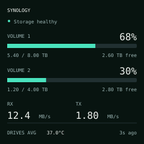
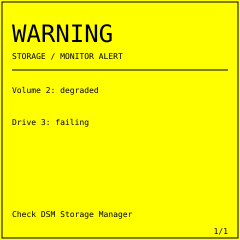
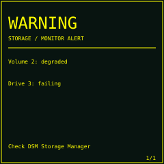
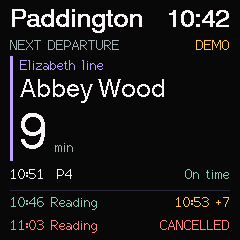

NAS overview
Two volumes, receive/transmit traffic and the average of individual drive temperatures. Changed fields redraw without routine full-screen flashing.
Two firmware samples for a Wi-Fi mini display. Build your own dashboard from these examples, with a web UI and authenticated firmware updates.

Two volumes, receive/transmit traffic and the average of individual drive temperatures. Changed fields redraw without routine full-screen flashing.


Yellow flashing makes a fault visible. The screen names the issue and pages longer warning lists. The preview alternates yellow with the dark dashboard palette.

Arrivals or departures with a large next train and two following services when there are no warnings. Fresh settings default to Paddington; use the web table for daily windows, routes and refresh intervals. The ESP fetches Realtime Trains directly.
All readings are synthetic. These illustrations are not device photographs or a live device connection. The gallery runs offline, loads no external assets and sends no data. Repository README · Development guide